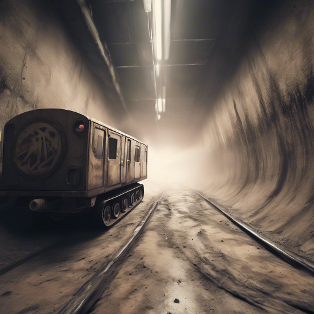

A jármű elrobog a távolba, porfelhőt hagyva maga után. Miután megbizonyosodsz, hogy tiszta a levegő, előbújsz. Egy keréknyomot követsz, ami egy alagút felé vezet. Egy régi metrólejáró.

Ha bemész az alagútba.
Ha inkább visszatérsz a térképen jelzett bunker irányába.